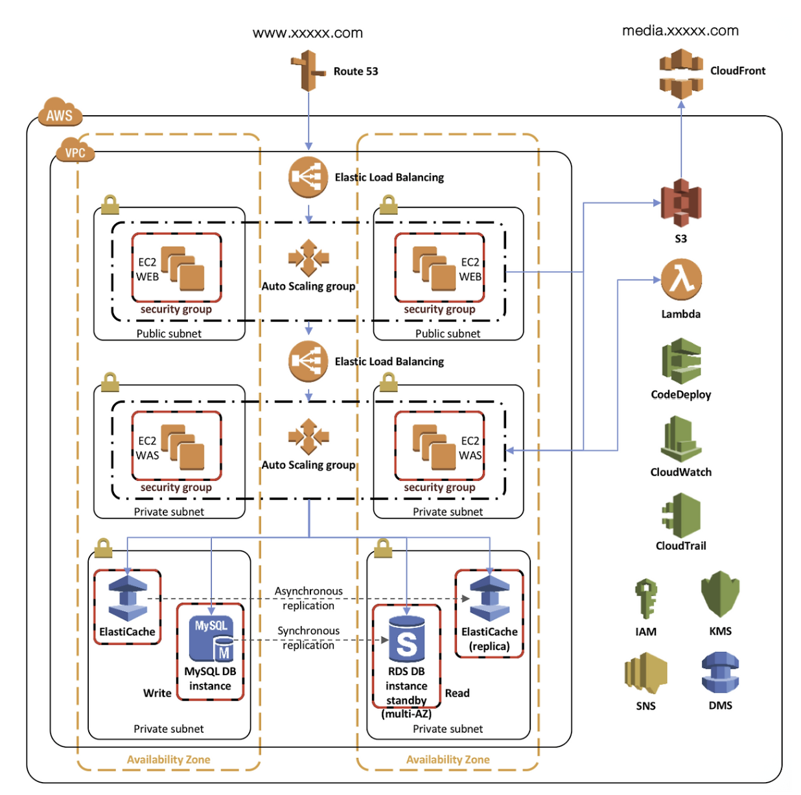

MIDAS IT 아키텍처 분석
1. 개요
마이다스아이티(MIDAS IT)
- 설립 및 규모: 2000년 9월 설립, 600여 명의 글로벌 기술 인력 보유.
- 주요 사업: 공학 기술용 소프트웨어 개발 및 엔지니어링 서비스, 웹 비즈니스 통합 솔루션.
- 글로벌 네트워크: 8개 현지 법인과 35개국 네트워크를 통해 110여 개국에 소프트웨어 수출.
- 핵심 서비스: 2017년 AWS 기반의 임대형 채용 솔루션 '마이다스 인사이트' 론칭 (현재 약 300여 개 주요 기업 사용 중).
당면 과제
- 극심한 트래픽 변동성: 채용 시즌에는 수만 명이 몰리지만 비시즌에는 사용률이 거의 제로에 가까운 비즈니스 특성.
- 비용 및 관리 비효율: 기존 온프레미스(자체 서버) 환경에서는 최대 트래픽에 맞춰 장비를 사야 했기에 평상시 노는 장비에 대한 유지비 부담이 큼.
- 유연성 부족: 지원자 수를 정확히 예측하기 어려운 상황에서 서버를 즉각적으로 늘리거나 줄이는 확장성이 필요했음.
→ 인프라 관리의 효율성을 높이기 위해 AWS 클라우드 도입을 결정.
2. 아키텍처 분석

2.1 트래픽 흐름
이미지나 영상 같은 정적 미디어 파일은 S3에 저장되며 CloudFront가 이를 전 세계 엣지 로케이션에 캐싱하여 오리진 서버의 부하를 줄이고 응답 속도를 높입니다.
사용자의 도메인 질의를 Route 53이 수신하여 External ELB로 라우팅합니다. Web 계층(Public Subnet)으로 들어온 요청은 External ELB를 통해 여러 대의 EC2 WEB 서버로 분산됩니다. 이 서버들은 Auto Scaling Group으로 구성되어 트래픽 변동에 따라 대수가 자동 조절되며 Security Group 설정을 통해 80(HTTP)과 443(HTTPS) 포트만 외부에 개방하여 보안을 유지합니다.
App 계층(Private Subnet)은 외부 인터넷과 격리된 환경에서 비즈니스 로직을 수행합니다. 웹 서버의 요청은 내부 전용 로드 밸런서인 Internal ELB를 거쳐 EC2 WAS 서버로 전달됩니다. 이 계층의 보안 그룹은 WEB 계층의 보안 그룹 ID를 소스(Source)로 설정합니다. 이를 통해 웹 서버를 거치지 않은 비정상적인 모든 접근을 막고 안정성을 확보합니다.
Database 계층(Private Subnet)은 최종적으로 데이터를 저장하고 관리합니다. 빈번한 조회 쿼리는 인메모리 기반의 ElastiCache에서 처리하며 성능 최적화를 위해 마스터와 복제본 간에 비동기 복제(Asynchronous Replication)를 수행합니다. 실제 원본 데이터는 Amazon RDS(MySQL)에 저장되며 Multi-AZ 구성을 통해 Master와 Standby 인스턴스 간 동기 복제(Synchronous Replication)를 실시합니다. 동기 복제는 Master에 기록된 데이터가 Standby에도 동일하게 기록되었음을 확인한 후 트랜잭션을 완료하므로 장애 발생 시 데이터 유실 없는 즉각적인 페일오버(Failover)와 데이터 무결성을 보장합니다. DB 및 캐시 계층의 보안 그룹 또한 오직 WAS 계층의 보안 그룹으로부터 오는 전용 포트 요청만 수락하도록 제한합니다.
2.2 배포 자동화 및 관리 서비스
S3는 정적 미디어 파일과 배포 아티팩트를 보관하는 확장성 높은 객체 스토리지로 CloudFront에 콘텐츠를 공급하는 원본 저장소 역할을 합니다. CodeDeploy와 Lambda는 애플리케이션 업데이트의 자동화를 담당합니다. CodeDeploy가 새로운 코드를 인스턴스에 배포하면 Lambda는 배포의 시작과 종료 이벤트를 감지하여 필요한 스크립트를 실행하거나 시스템 상태를 트리거합니다. 이 과정에서 발생하는 주요 상태 변화와 알림은 SNS를 통해 관리자에게 실시간 메시지로 전달됩니다.
2.3 관측성 및 모니터링 서비스
시스템의 안정성 유지를 위해 CloudWatch와 CloudTrail이 상시 구동됩니다. CloudWatch는 EC2, RDS 등의 리소스 성능 지표(CPU 사용률, 메모리 등)를 모니터링하고 로그를 수집하여 특정 임계치 초과 시 알람을 발생시킵니다. CloudTrail은 계정 내에서 발생하는 모든 API 호출 내역을 기록합니다. 이를 통해 "누가, 언제, 어떤 리소스를 변경했는지"에 대한 감사 데이터를 제공하여 침해 사고 분석의 근거가 됩니다.
2.4 보안 및 데이터 이관 서비스
IAM과 KMS는 접근 제어와 데이터 보호를 수행합니다. IAM은 사용자 및 서비스 역할에 대한 권한을 정의하여 최소 권한 원칙을 구현합니다. KMS는 S3에 저장된 파일이나 RDS 데이터베이스를 암호화하기 위한 암호화 키를 안전하게 생성하고 관리합니다. 마지막으로 DMS는 온프레미스 데이터베이스나 다른 환경의 데이터를 AWS로 안전하게 이전할 때 사용되며 서비스 중단 시간을 최소화하면서 데이터베이스 스키마와 데이터를 마이그레이션하는 역할을 지원합니다.
3. 보안 관점 분석
3.1 추가됐으면 하는 보안 요소
1. EC2 서버의 Private Subnet 이동
Public Subnet에 있던 EC2를 Private Subnet으로 이동시키고 외부 트래픽은 Public Subnet의 ALB가 전담하도록 합니다. Web 서버에서 공인 IP를 제거하여 공격자가 ELB를 거치지 않고 서버에 도달하는 경로를 차단합니다.
2. AWS WAF 및 ACM 적용
ALB 앞단에는 AWS WAF를 배치합니다. WAF로 L7 계층의 공격을 방어합니다. 그리고 ACM을 적용하여 SSL/TLS 인증서를 ALB에 적용함으로써 모든 전송 구간을 HTTPS로 강제합니다.
3. VPC Endpoint와 AWS SSM 활용
Private Subnet의 서버들이 S3나 CloudWatch 등과 통신할 때 IGW나 NAT Gateway를 거치지 않고 VPC Endpoint를 통한 내부 망 통신을 수행합니다. SSM Session Manager는 SSH를 열지 않고 인스턴스에 접속할 수 있는 환경을 만들어줍니다. 이에 따라 Bastion Host도 두지 않아도 됩니다.
4. VPC Flow Logs 및 AWS Config 추가
VPC Flow Logs와 AWS Config를 두어 IP 트래픽을 기록하고 리소스의 설정 변경 사항을 감시하는 요소를 추가합니다.
참고 자료
https://aws.amazon.com/ko/solutions/case-studies/midas-it/